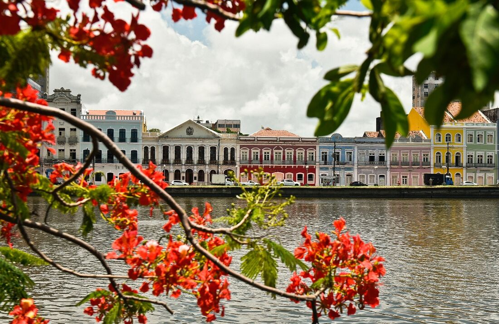
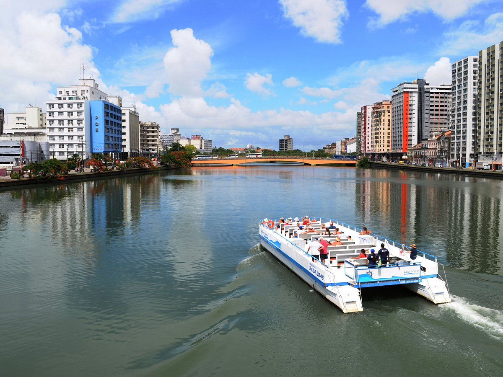

Distinção internacional é uma iniciativa do Conselho Mundial de Viagens e Turismo, chancelado pela Organização Mundial do Turismo, assegurando o cumprimento dos protocolos na cidade.

*Vista da Rua da Aurora*
*Passeio de barco no Rio capibaribe*

*As pontes do Recife*

*O Paço do Frevo*